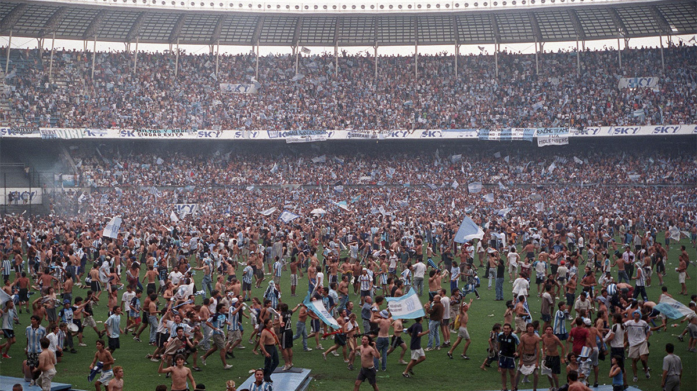

Galería Histórica del Fútbol Argentino

20 de octubre de 1976, debut de Diego Armando Maradona en el Bicho
Con Argentinos Juniors, vs Talleres. Se comenzaba a escribir la historia más grande del fútbol argentino.

Maradona se retira del fútbol en la Bombonera, 25 de octubre de 1997.
Diego cuelga los botines en la cancha de Boca, ante su gente.
Caño de Riquelme a Yepes
Boca vs River, Copa Libertadores 2000.

Racing campeón Torneo Apertura 2001.
Campeón del fútbol argentino después de 35 años.

Clásico de La Plata 2006, Estudiantes gana 7-0 a Gimnasia.
Estudiantes aplastó a su clásico rival y luego fue campeón del torneo.

Temporada 2011, River desciende a la B Nacional.
Tras perder la promoción con Belgrano, River baja de categoría.

River Plate campeón Copa Libertadores 2018.
Le gana la final a Boca Juniors en Madrid.

2025, Ángel Di María vuelve a Rosario Central.
Después de una carrera gloriosa, vuelve al club de sus amores.